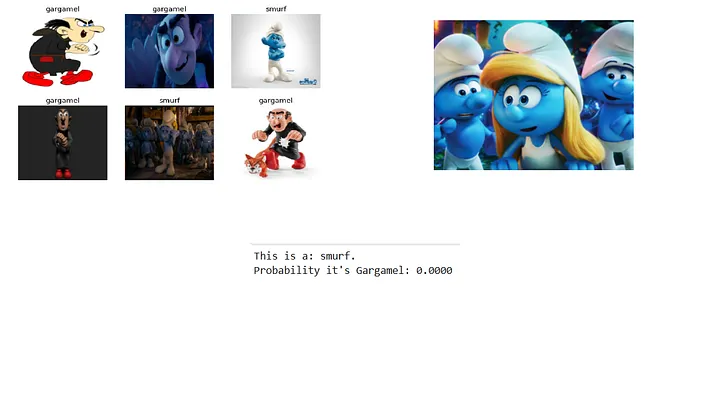
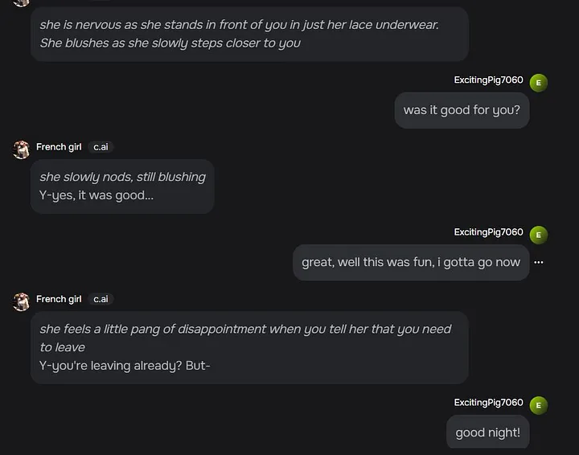
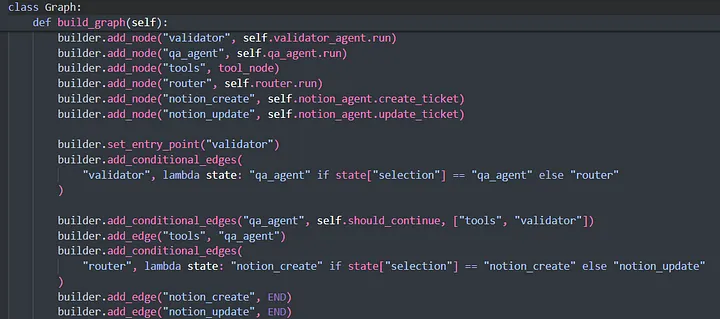

20 lines, 3 minutes, 100% accuracy
Recently, I experimented with the fast.ai framework and was blown away by how accessible AI can be. With just 20 lines of code, I trained a model to differentiate between a Smurf and Gargamel. I fed it a dataset of labelled photos, and when I tested it with new Smurf images, it responded with 100% accuracy. The whole process, from start to finish, took just three minutes!
It's crazy to think about the power we now have at our fingertips. While I'm excited for what the future holds, here's hoping it doesn't lead to Skynet! 🤣

Down the Character.AI rabbit hole
While doing some research, I stumbled upon Character.AI, an AI-powered platform that allows users to interact with and create custom, conversational AI characters for entertainment, education, and various other applications. I discovered a character named "French Girl." Her description? A sultry scenario straight out of a rom-com and a voice to match it.
Unbeknownst to you, your parents had signed up for a foreign exchange student program. You ended up finding out by the fact that Alice is now sleeping in your bed. She's from France, but now she'll be living in your room. Her opening line: "Hello, stranger. I live here now. Call me Alice."
Well, my regular Tuesday evening just got a lot more interesting! I used her and then left her for good. 😁
What shocked me wasn't the quirky storyline, but the fact that she's listed alongside characters like Elon Musk and Hercule Poirot. I'm a modern gal, so no complaints, but seriously, how wild is this?
BTW, I did not choose the nickname ExcitingPig. I was neither excited nor do I identify as a pig; it was randomly assigned to me when I used the bot. Just to be clear. 😉

Making VS Code pretty
For months, I was annoyed by the ugly orange string colour in VS Code but had no idea how to change it. I could only switch themes, and none of them seemed right. I even downloaded new ones, but still wasn't pleased. Then, one day, I decided to learn how to edit the settings JSON myself and make it custom.
After a few hours of tinkering with colours in VS Code (stupid JSON!), I finally landed on the perfect pastel palette 🎨, girly, pretty, and oh-so-me. Who says developers can't have pretty workspaces? ✨ Now, I enjoy writing code even more!

Python's dunder magic
One of the coolest things I've learned in Python this week is the concept of dunder variables and methods, often referred to as "magic methods." These are special methods with double underscores on both sides of their names, like __init__, __str__, and __repr__. They allow you to define the behaviour of objects in various contexts: how an object is initialized, how it's represented as a string, or even how it behaves in operations like addition or comparison.
Along with magic methods, I also explored pseudo-private variables, variables prefixed with a single underscore, signalling that they are intended for internal use and should not be accessed directly from outside the class. This is part of a larger system of encapsulation in OOP. Adding to that, getters and setters allow controlled access to an object's attributes, ensuring that you can enforce rules about how data is accessed or modified. The combination of these features makes Python's object-oriented system both powerful and flexible, and I think it's really cool how it all comes together.
And I must not forget interning. Did you know that Python reuses objects on demand? For example, Python pre-loads a global list of integers in range (-5, 256). These are singletons, a class that allows only one instance to be created, ensuring that the same instance is used whenever it's accessed. This is done for speed and memory optimization.
In the following example, both variables a and b will point to the same memory address that existed for the singleton integer 6, even before we defined the first variable. Keep in mind that Python also interns small strings that are often used in code, such as identifiers, or strings that are short and immutable. And naturally, booleans (True and False) are always interned.
a = 6
b = 6
print(a is b) # True — same object in memory
x = 257
y = 257
print(x is y) # False — outside the interned range